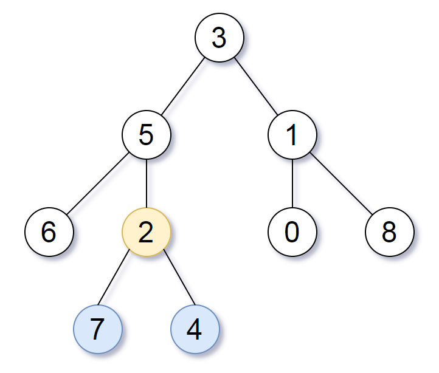

865. 具有所有最深节点的最小子树
| 题目信息 | 内容 |
|---|---|
| 难度 | 中等 |
| 核心模式 | 后序 DFS 同时返回"最大深度"与"最深节点的最近公共祖先" |
| 时间复杂度 | O(n) |
| 空间复杂度 | O(h) |
题目与约束
给定一个根为 root 的二叉树，每个节点的深度是 该节点到根的最短距离 。
返回包含原始树中所有 最深节点 的 最小子树 。
如果一个节点在 整个树 的任意节点之间具有最大的深度，则该节点是 最深的 。
一个节点的 子树 是该节点加上它的所有后代的集合。
示例 1：

输入：root = [3,5,1,6,2,0,8,null,null,7,4]
输出：[2,7,4]
解释：
我们返回值为 2 的节点，在图中用黄色标记。
在图中用蓝色标记的是树的最深的节点。
注意，节点 5、3 和 2 包含树中最深的节点，但节点 2 的子树最小，因此我们返回它。
示例 2：
输入：root = [1]
输出：[1]
解释：根节点是树中最深的节点。
示例 3：
输入：root = [0,1,3,null,2]
输出：[2]
解释：树中最深的节点为 2 ，有效子树为节点 2、1 和 0 的子树，但节点 2 的子树最小。
提示：
-
树中节点的数量在
[1, 500]范围内。 -
0 <= Node.val <= 500 -
每个节点的值都是 独一无二 的。
注意：本题与力扣 1123 重复：https://leetcode.cn/problems/lowest-common-ancestor-of-deepest-leaves
核心不变量
对任意节点，它所在子树返回"最大深度"和"该子树内所有最深节点的最近公共祖先（LCA）"；若左右子树深度相等，则当前节点本身就是这个 LCA。
完整推导
思路推导
- 转化问题（最小子树 = 最深节点的 LCA）
"包含所有最深节点的最小子树"的根，恰好就是所有最深节点的最近公共祖先（LCA）。因为要"最小"，根必须尽可能低；而所有最深节点必须都在它的子树里，最低的公共祖先就是 LCA。
- 一次后序遍历自底向上求
定义 dfs(node) 返回一对信息：(本子树最大深度, 本子树中最深节点的 LCA)。空节点返回 (0, null)；叶子节点返回 (1, 自己)。
- 分三种情况合并
- 左深 > 右深：最深节点全在左子树，LCA 取左子树的答案，深度 = 左深 + 1。
- 右深 > 左深：对称，取右子树答案。
- 左右深度相等：最深的叶子分散在两侧（或为空），它们的 LCA 只能是当前节点，返回
(左深 + 1, 当前节点)。
- 小例子（示例 3）
树 [0,1,3,null,2]：3 是根 0 的右孩子，左子树最深路径是 1→2（深度 3）。节点 1 左空、右为 2 → dfs(1) 返回 (3, 节点 2)；根 0 左子树更深、最深节点在节点 2 那一支，最终答案就是节点 2，与示例一致。
Java 实现（subtreeWithAllDeepest）
/**
* Definition for a binary tree node.
* public class TreeNode {
* int val;
* TreeNode left;
* TreeNode right;
* TreeNode() {}
* TreeNode(int val) { this.val = val; }
* TreeNode(int val, TreeNode left, TreeNode right) {
* this.val = val;
* this.left = left;
* this.right = right;
* }
* }
*/
class Solution {
// 封装：子树最大深度 + 该子树内最深节点的 LCA
private static class Info {
int depth;
TreeNode node;
Info(int depth, TreeNode node) {
this.depth = depth;
this.node = node;
}
}
public TreeNode subtreeWithAllDeepest(TreeNode root) {
return dfs(root).node;
}
private Info dfs(TreeNode node) {
if (node == null) {
return new Info(0, null);
}
Info left = dfs(node.left);
Info right = dfs(node.right);
// 左侧更深：答案在左子树
if (left.depth > right.depth) {
return new Info(left.depth + 1, left.node);
}
// 右侧更深：答案在右子树
if (right.depth > left.depth) {
return new Info(right.depth + 1, right.node);
}
// 深度相等：当前节点即最深节点的 LCA
return new Info(left.depth + 1, node);
}
}
复杂度
- 时间：O(n)，每个节点只被后序遍历访问一次，合并为常数时间。
- 空间：O(h)，h 为树高，即递归调用栈深度；最坏退化为链时 O(n)。
易错点与扩展（面试高频考点）
- 把"深度相等"误判为返回空：左右深度相等时不能返回
null，必须返回当前节点——它正是两侧最深叶子的 LCA。 - 深度基准的约定：空节点深度取 0、叶子取 1，合并时统一
+1，避免差一位。 - 不要两次遍历：先求全局最大深度、再第二次找节点虽然也对（O(n) 两遍），但一次后序返回
(depth, node)更优雅，面试更亮眼。 - 与 1123 等价：本题就是"最深叶节点的最近公共祖先"，两题可同一份代码通过。
- 返回值是节点而非值：题目要求返回子树根节点（
TreeNode），不要只返回值或深度。
力扣原题
C++ 实现
class Solution {
public:
TreeNode* subtreeWithAllDeepest(TreeNode* root) {
return dfs(root).second;
}
private:
// pair<深度, 最深节点LCA>
pair<int, TreeNode*> dfs(TreeNode* node) {
if (!node) return {0, nullptr};
auto left = dfs(node->left);
auto right = dfs(node->right);
if (left.first > right.first) {
return {left.first + 1, left.second};
}
if (right.first > left.first) {
return {right.first + 1, right.second};
}
// 深度相等，当前节点即 LCA
return {left.first + 1, node};
}
};
Python 实现
class Solution:
def subtreeWithAllDeepest(self, root: Optional[TreeNode]) -> Optional[TreeNode]:
# 返回 (深度, 该子树内最深节点的 LCA)
def dfs(node):
if not node:
return (0, None)
left_depth, left_node = dfs(node.left)
right_depth, right_node = dfs(node.right)
if left_depth > right_depth:
return (left_depth + 1, left_node)
if right_depth > left_depth:
return (right_depth + 1, right_node)
# 深度相等，当前节点即最深节点的 LCA
return (left_depth + 1, node)
return dfs(root)[1]